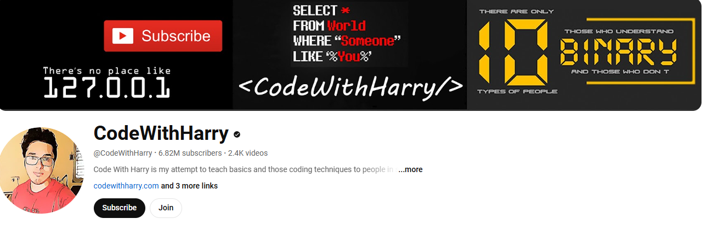

Back
Python programming language Reference book
"Python Crash Course" by Eric Matthes Youtube channel

channle link
channle link
Compiler for c++ programming
For Android Pydroid 3 is a powerful and user-friendly Python IDE for Android devices. Here are some key features:
Offline Python 3 Interpreter: You can run Python programs without an Internet connection.
Pip Package Manager: Install various Python packages using pip.
Support for Scientific Libraries: Includes libraries like numpy, scipy, matplotlib, scikit-learn, TensorFlow, and PyTorch.
Complete Development Environment: Offers a code editor, terminal emulator, and web browser to run Python scripts.
Debugging Tools: Includes a PDB debugger with breakpoints and watches.
GUI Support: Full support for Tkinter and Kivy for creating graphical user interfaces.
Pydroid 3 is perfect for learning and practicing Python on the go.
App link
For windows Welcome to the ultimate C++ Compiler app, designed to provide an intuitive and powerful coding experience. The app is equipped with features that cater to both beginners and seasoned developers, ensuring a seamless coding journey.
Key Features:
Syntax Highlighting: Enjoy a vibrant and readable code editor with color-coded syntax highlighting, making it easy to distinguish between different parts of your code.
Fast Code Layout: Our fast code layout includes frequently used symbols, allowing you to code more efficiently and with fewer keystrokes.
Tools Layout: Access essential shortcuts such as copy, paste, undo, redo, share, and more, all from a convenient tools layout. Customize your own shortcuts to match your workflow and enhance productivity.
Navigation Layout: Move your cursor effortlessly with our navigation layout, designed to make code navigation smooth and intuitive.
Scan Code Feature: Quickly scan and import code snippets using your device's camera. Perfect for grabbing code from textbooks, whiteboards, or printed documents.
Tutorials and News Section: Stay updated with the latest in Python development through our integrated tutorials and news section. Learn new techniques, best practices, and keep up with industry trends.
Bookmarks and Project Management: Easily bookmark important code snippets and projects for quick access. Manage your projects efficiently with our built-in project organization tools.
download link
Visual Studio Code (VS Code) is a free, open-source code editor developed by Microsoft. It's popular among developers due to its versatility and powerful features. Here are some key points:
Lightweight: Despite its powerful features, VS Code is lightweight and fast.
Extensible: You can enhance its functionality with a wide range of extensions available in the Visual Studio Code Marketplace.
Cross-Platform: It works on Windows, macOS, and Linux.
Built-in Git: It has integrated Git control, making version control easy.
IntelliSense: Offers smart code completion, syntax highlighting, and parameter info based on the code context.
Debugging: Provides a powerful debugger for various programming languages.
It's an excellent tool for developers of all levels, offering a rich and customizable development environment.
direct link
created by prince verma(boyinfire),BIT college Varanasi
this website is help all BCA students and for begginners too.
contact us